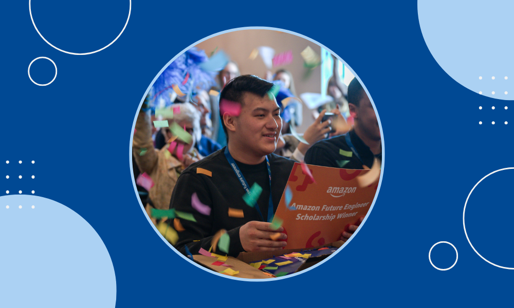
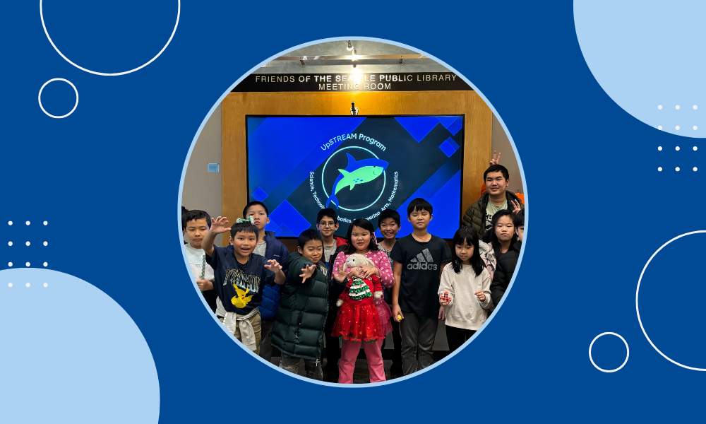

Kevin Chen is a student at UC Berkeley with experience leading innovative, data-driven initiatives at the intersection of business and technology.
With a background in software development and business intelligence, his work spans projects from automating regional experimentation workflows at
Amazon to expanding STEM education efforts at UpSTREAM. Leveraging his experience, Kevin is committed to translating
business needs into scalable solutions that deliver lasting value across global platforms.

At Amazon, Kevin built a metadata replication feature that improved experimentation workflows across global marketplaces.
With Project Sidewalk, he internationalized the platform to support crowdsourced data collection for improving urban accessibility.
As a research assistant at the University of Washington’s Social Futures Lab, he implemented a social computing curriculum in
Seattle Public Schools and co-authored a publication presenting his team's findings with ACM SIGCSE.

Kevin is also the founder and director of UpSTREAM, an initiative to expand access to STEM education for 1,000+ Seattle students.
As director, Kevin developed the program’s curriculum, managed 50+ volunteers, and mentored local students to build the program’s
user-responsive website yielding 5,000+ visitors. Today, Kevin oversees UpSTREAM's operations, strategy, and stakeholder communications.
Outside of his work, Kevin enjoys photography, connecting with the outdoors, and traveling along the Pacific Coast.